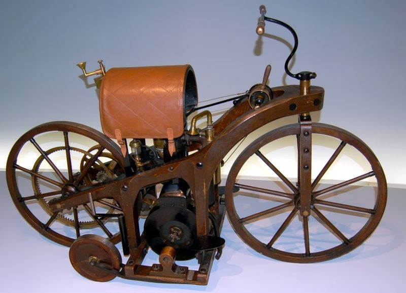

Мотоци́кл (від лат. motor — «той, що приводить в рух» і грец. κύκλος — «коло, колесо») — двоколісний
механічний транспортний засіб з боковим причепом або без нього, що відрізняється вертикальною посадкою водія
та прямим (безредукторним) управлінням переднім рульовим колесом. До мотоциклів прирівнюються класичні
двуколісні мотоцикли, моторолери, триколісні (трицикли), чотириколісні (квадроцикли), снігоходи та інші
механічні транспортні засоби, дозволена максимальна маса яких не перевищує 400 кг.[1] Окрім кількості коліс,
мотоцикли також розрізняються за своєю конструкцією та розмірами: мопеди, мокіки (мають невеликий розмір
двигуна, зазвичай до 50 см³), моторолери або скутери (закритий кузовом двигун розташований під сидінням
водія та майданчики для ніг), і власне самі мотоцикли різних типів: класичні, крузери, турери, спортивні,
шосейні, кросові, ендуро, чопери.
Мотоцикл є однією з найбільш доступних форм автотранспорту. У світі станом на 2002 рік було приблизно 205
мільйонів мотоциклів, в тому числі мопедів, моторолерів, моторизованих велосипедів та інших дво- та
триколісних транспортних засобів, або близько 33 мотоцикла на 1000 чоловік. Для порівняння, у світі
налічувалося близько 590 мільйонів автомобілів, або 91 на 1000 осіб, при цьому близько однієї третини (195
млн. одиниць) з них знаходилося в Японії і США[2].
Історія

Перший відомий моторний двоколісний екіпаж — велосипед з паровою машиною — побудований у 1869 р. французом
П'єром Мішо. Важкий кований остов і двигун усього в чверть кінської сили з громіздким котлом зробили машину
малопридатною для їзди. Парові велосипеди, створені винахідниками-одинаками XIX століття, залишилися
одиничними експериментами.
Перший мотоцикл з ДВЗ (Daimler Reitwagen) був побудований в Німеччині німецькими інженерами Готтлібом
Даймлером і Вільгельмом Майбахом в 1885 році. Бензиновий карбюраторний двигун Даймлера і Майбаха мав
потужність 1,5 к.с. і був встановлений на дерев'яній рамі з дерев'яними колесами. На перших випробуваннях
мотоцикл розвинув швидкість 12 км/год. У цьому ж році він був запатентований Даймлером як «машина для
верхової їзди з гасовим двигуном». Таким чином, мотоцикл в сучасному розумінні з'явився на рік раніше
першого бензинового автомобіля.
Harley Davidson 1916 року зі двигуном 1000cc.У 1894 році відкрилося перше серійне виробництво мотоциклів.
Машина «Хільдебранд і Вольфмюллер» нагадувала велосипед з дамською рамою і була ще дуже недосконала.
Зроблено було близько 2000 штук за три роки існування марки.
У перші роки XX століття мотоцикл набрав популярності завдяки дешевизні і спортивному духу. Заснування
найстаріших з відомих у світі європейських та американських марок: 1899 — Matchless (Англія); 1901 — Royal
Enfield (Англія), FN (Бельгія); 1902 — Triumph (Англія) і Indian (США); 1903 — Harley-Davidson (США),
Husqvarna (Швеція); 1908 — NSU (Німеччина); 1910 — BSA (Англія); 1911 — Benelli (Італія).
Типовий мотоцикл 1900-х — середини 20-х років мав раму велосипедного типу з низько встановленим в передньому
трикутнику тихохідним важким двигуном, часто з безпосереднім ремінних приводом на колесо. У 20-х
активізувалися італійські та німецькі фірми, мотогонки стали масовим і видовищним спортом, прискоривши
розвиток компонування і технології.
До середини 30-х компонування мотоцикла наблизилося до сучасного: алюмінієвий двигун в блоці з коробкою
передач, рама підвищеної жорсткості на кручення, м'яка підвіска, повне електрообладнання, колеса 16-19
дюймів, привід ланцюгом або карданом, каплеподібний бензобак. 40-50 роки характерні посиленням поділу
дорожніх машин на респектабельні і недорогі утилітарні, розвиненим капотуванням мотоцикла і появою
моторолера — повністю капотованої машини з переднім вітровим щитом, поликом і «табуреточною» посадкою, як
правило — на 10-дюймових колесах. Загальна автомобілізація США в результаті привела до того, що до 1953 в
країні залишився єдиний значущий виробник мототехніки — Harley-Davidson.
На початку 60-х на світовий ринок виходять японські виробники — Honda, Yamaha, Suzuki, Kawasaki, які за 15
років пройшли шлях від гаражної збірки мотовелосипедів до створення масових ультрасучасних байків. У 60-70
рр. зростання потужності, популярність гонок і підігрівання японськими фірмами попиту на потужні динамічні
машини призводить до формування спортивного, агресивного стилю в конструюванні і дизайні. У розвинених
країнах мотоцикл поступово перестає грати роль утилітарного транспорту, залишаючись рекреаційним засобом. На
противагу швидкісним з'являється клас машин типу чоппер — важкі, солідні і екстравагантні.
У США до кінця 60-х, а в СРСР — до середини 70-х складна суспільна ситуація і розвиток молодіжних субкультур
призводять до формування характерного образу бунтаря, і зокрема — до негативного сприйняття мотоцикліста, в
очах пересічних громадян, як людини здатної поставити особисту свободу і інтереси вузької спільноти вище
закону. Обидві держави за допомогою поліцейських заходів та піару намагалися боротися з наявними
правопорушеннями з боку угруповань байкерів шляхом тиску на мотоциклетне співтовариство взагалі, включаючи і
звичайних законослухняних користувачів. Зі спадом агресії в суспільстві і деяким підйомом економіки подібні
настрої пішли, але поява байкерських outlaw-«банд» (в тому числі і в СРСР наприкінці 80-х) залишилося
яскравим фактом історії мотоцикла, що вплинув на розвиток мотоциклетного руху в світі.
У 80-ті під впливом неослабної популярності мотоспорту входять в моду обтікачі рубаної форми, з ростом
швидкостей широко застосовуються легкі наджорсткі просторові рами і дискові гальма. Від кросових мотоциклів
відокремлюються споживчі «ендуро», з'являються квадроцикли, а моторолер 50-х відроджується у вигляді
сучасного «скутера» з пластиковим облицюванням, литими колесами і двигуном зменшеної кубатури при збереженні
потужності. Серед «просто мотоциклів» відбувається все більша диференціація — виділяються «заряджені»
стрітфайтери, наближені до гоночних спортбайки, комфортні масивні і не потребуючи ідеальних доріг турери,
неокласики — варіації на тему пізніх 60-х, від крузерів відокремлюються химерні чоппери, на базі серійних
моделей всіх видів вручну виготовляються ще більш вигадливі кастоми.
1990-ті — початок 2000-х років характерні зростанням технологічної досконалості машин провідних марок,
обумовлені повсюдним впровадженням комп'ютерів в проектування, матеріалознавство і дизайнерську роботу. З
іншого боку, бурхливий ріст економік Китаю та інших країн Південно-східної Азії майже повністю витіснив
імениті фірми з ринку дешевої утилітарної мототехніки і повністю задовольнив найвищий попит на легкі
мотоцикли в країнах, що розвиваються. Європейські виробники традиційних марок, втрачаючи силу, зникають або
поглинаються більшими; мотопромисловість колишнього СРСР, що на рубежі 80-х досягла другого місця в світі за
об'ємами випуску, представлена архаїчними моделями і тому практично перестає існувати.
У 2010-ті в Європі і США росте кількість дрібносерійних ексклюзивних виробництв, іноді використовують
знамениті в минулому марки. Яскравою рисою новітнього часу стала поява масових електромотоциклів всіх класів
— завдяки доведенню до споживчого ринку технологій літій-іонних акумуляторів, потужних безконтактних
електродвигунів і закономірній моді на екологічні ідеї. Масові електроцикли особливо малих класів широко
випускаються в Китаї. У той же час на азійських та латиноамериканських конвеєрах, як і раніше, стоять моделі
з ДВЗ, які ведуть свій лік часу з ранніх 60-х.
Класифікація
За призначенням мотоцикли підрозділяються на:
- дорожні (транспортні);
- спортивні.
За конструкцією, формою та компоновкою рами, двигуна та коліс (і, відповідно, за посадкою мотоцикліста), на
такі основні групи:
- шосейно-дорожні;
- шосейно-спортивні;
- позашляхові (ендуро);
- кросові;
- гоночні;
- чоппери.
Дорожні мотоцикли, завдяки малим габаритам і масі, хорошій маневреності, високій прохідності і простоті
обслуговування використовуються як засіб індивідуального транспорту. До спеціальних мотоциклів відносяться
патрульні, ескортні, торгові і т. ін.